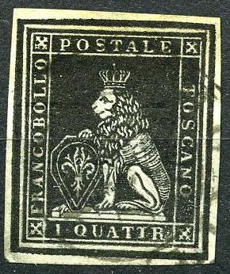
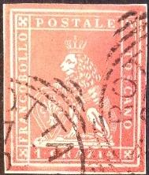
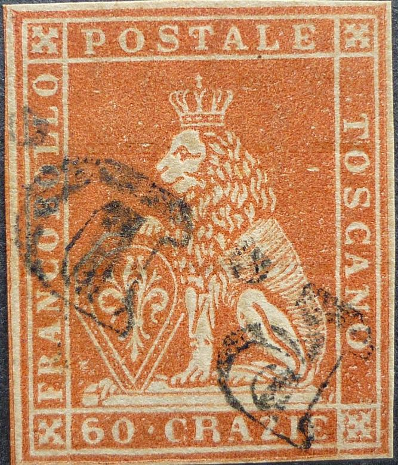
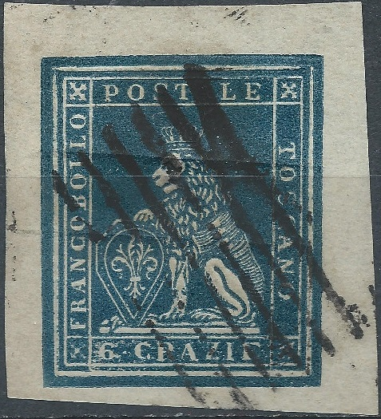
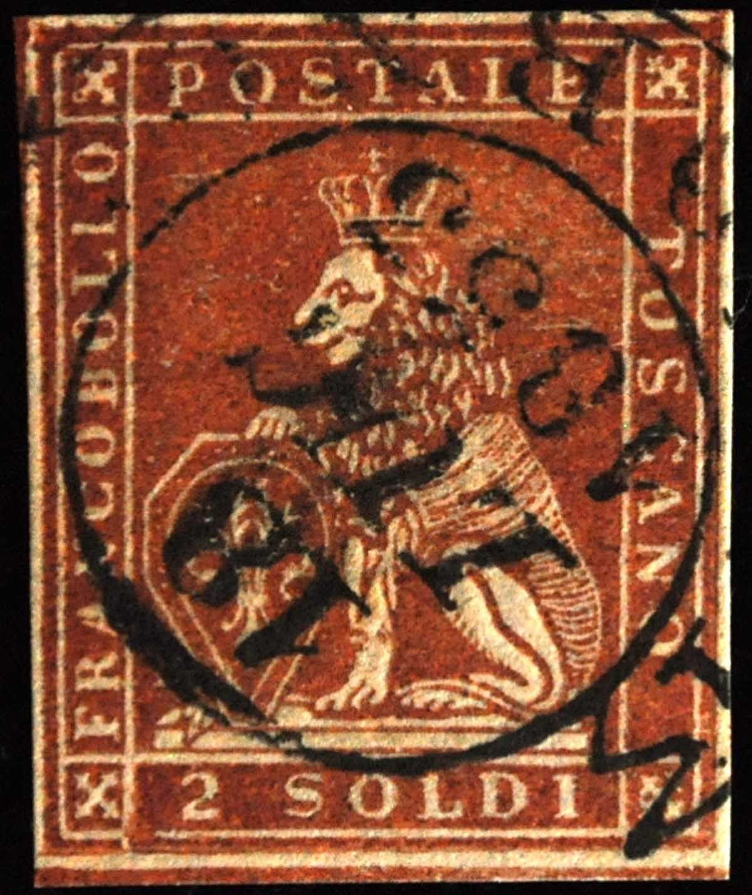
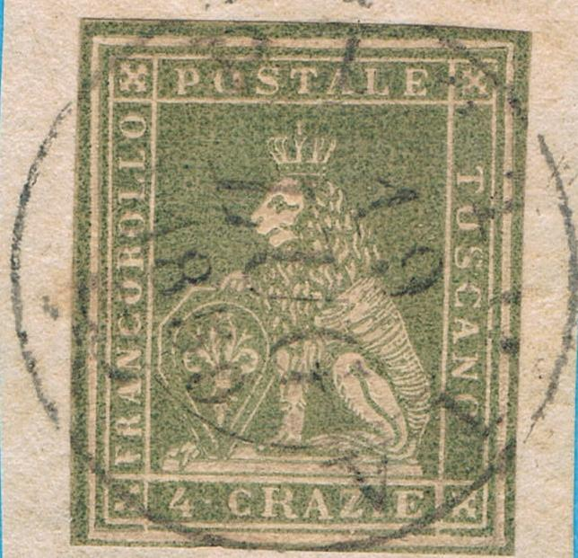

{kind=link}

Toscana - Toscane - Toskana
Return To Catalogue - Tuscany 1851 issue, forgeries, part 1 - Tuscany 1851 issue, forgeries, part 2 - Tuscany 1851 issue, forgeries, part 4 - Tuscany Fournier forgeries - Tuscany 1851 issue, more Fournier forgeries - Tuscany 1851 issue - Tuscany 1860 issue and miscellaneous - Italy
Note: on my website many of the
pictures can not be seen! They are of course present in the
catalogue;
contact me if you want to purchase the catalogue.
The forgeries are printed with large margins usually (which are supposed to be cut off?). These forgeries have an extra very thick outer frameline. The back of the lion is very heavily shaded. They often appear with a "18 LUG 1853 LIVORNO" or "PISTOLA 19 LUG 1859" cancel. The "O" of "POSTALE" is too round. The nose of the lion is too big. They often appear pasted on small pieces of paper as other Oneglia forgeries.







6 parallel lines cancel. In the book 'Philatelic forgers, their
Lives and Works' by V.Tyler, a copied page of the 'Philatelisten
Zeitung 18 page 100, 1905' is reproduced with a forged Oneglia 6
lines cancel as on the second 6 k forgery shown above.



"18 LUG 1853 LIVORNO" forged cancel on these forgeries.



"PISTOIA 19 LUG 1859" forged cancel


The design is pressed into the paper (almost like embossed).

Here a 4 c with the thick outer frameline cut off. The above
forgery has many differences with the genuine stamps, the letters
in "POSTALE" are different ("O" fatter,
"S" thinner etc.), the shield has a smaller centre
design, the "4" is more to the right than the genuine
etc.
Forgery of the 1 Q stamp.
Tuscany 1851 issue,
forgeries, part 1
Tuscany 1851 issue, forgeries, part 2
Tuscany 1851 issue, forgeries, part 4
Tuscany 1851 issue, forgeries, Fournier
forgeries
Tuscany 1851 issue, forgeries, more
Fournier forgeries
{kind=link}
{kind=link}
{kind=link}